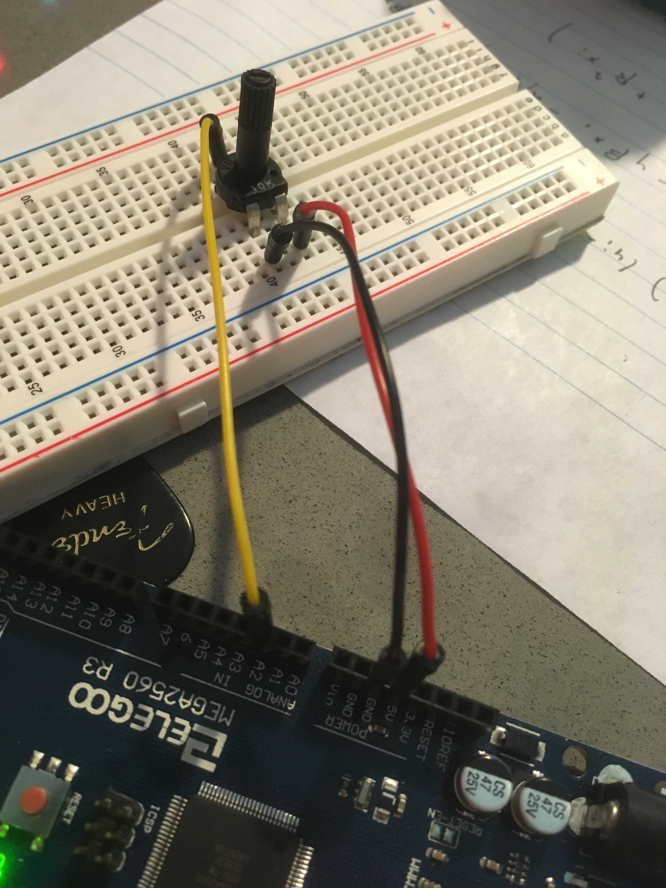
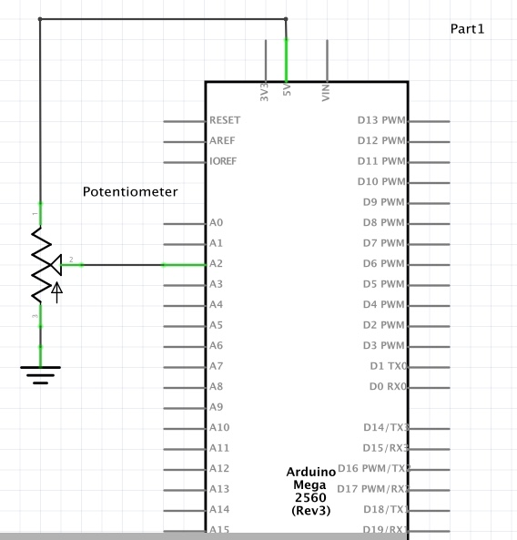

Datalogging!
Assignment: Create a webpage with p5.js that interacts with data coming from an Arduino over serial.
Image: Circuit
The potentiometer is wired to pin A2 and the data is transmitted over the serial connection.

Gif: Circuit/p5 Operation

Circuit Schematic

Arduino Code - very simple
int POTPIN = A2;
void setup() {
Serial.begin(9600); // Serial for commuication to p5
pinMode(POTPIN, INPUT); //input from potentiometer
}
void loop() {
int val = analogRead(POTPIN); //read pot value
Serial.println(val); //send pot value to serial
delay(200); //wait 200 ms
}
sketch.js code - draw value from Arduino potentiometer to website
var serial; // variable to hold an instance of the serialport library
var portName = '/dev/cu.usbmodem1411'
var datain; //some data coming in over serial!
var xPos = 0;
function setup() {
serial = new p5.SerialPort(); // make a new instance of the serialport library
serial.on('list', printList); // set a callback function for the serialport list event
serial.on('connected', serverConnected); // callback for connecting to the server
serial.on('open', portOpen); // callback for the port opening
serial.on('data', serialEvent); // callback for when new data arrives
serial.on('error', serialError); // callback for errors
serial.on('close', portClose); // callback for the port closing
serial.list(); // list the serial ports
serial.open(portName); // open a serial port
createCanvas(1200, 800);
background(0x08, 0x16, 0x40);
}
// get the list of ports:
function printList(portList) {
// portList is an array of serial port names
for (var i = 0; i < portList.length; i++) {
// Display the list the console:
print(i + " " + portList[i]);
}
}
function serverConnected() {
print('connected to server.');
}
function portOpen() {
print('the serial port opened.')
}
function serialError(err) {
print('Something went wrong with the serial port. ' + err);
}
function portClose() {
print('The serial port closed.');
}
function serialEvent() {
if (serial.available()) {
datain = Number(serial.readLine());
console.log(datain);
}
}
function graphData(newData) {
// map the range of the potentiometer output to the height
var yPos = map(newData, 0, 1023, 0, height);
// draw the line in a pretty color:
stroke(255, 0, 255);
var offsetToMiddle = (height - yPos) / 2;
line(xPos, height - offsetToMiddle, xPos, height - yPos - offsetToMiddle);
// at the edge of the screen, go back to the beginning:
if (xPos >= width) {
xPos = 0;
// clear the screen by resetting the background:
background(0x08, 0x16, 0x40);
} else {
// increment the horizontal position for the next reading:
xPos++;
}
}
function draw() {
//background(0);
fill(255);
graphData(datain);
/*if (datain == 0) {
text("button pressed: YES", 30,30);
} else {
text("button pressed: NO", 30,30);
}*/
}